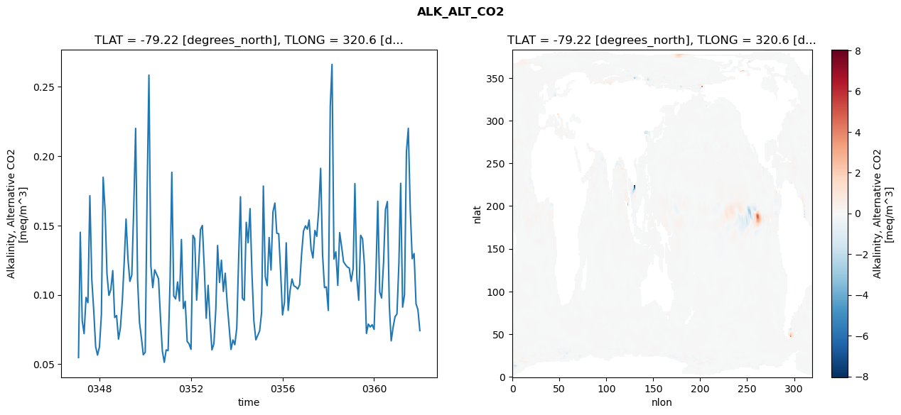
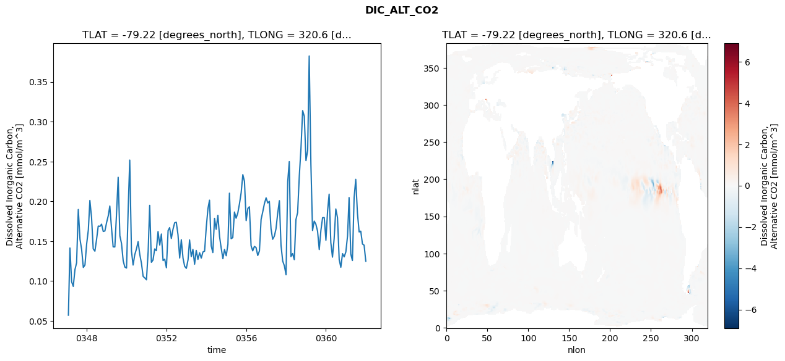
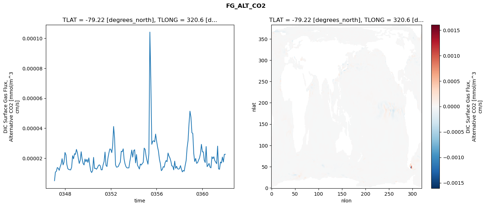
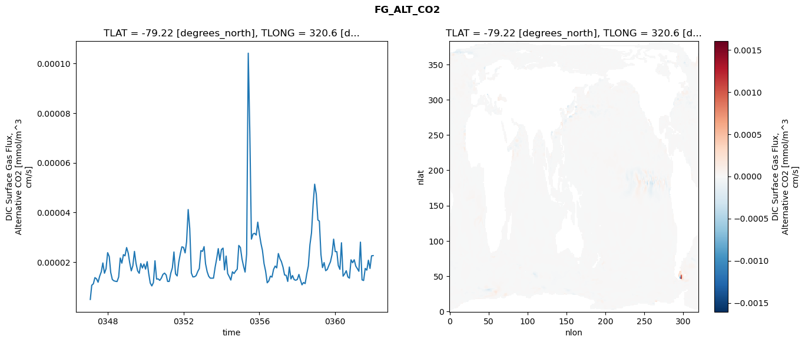
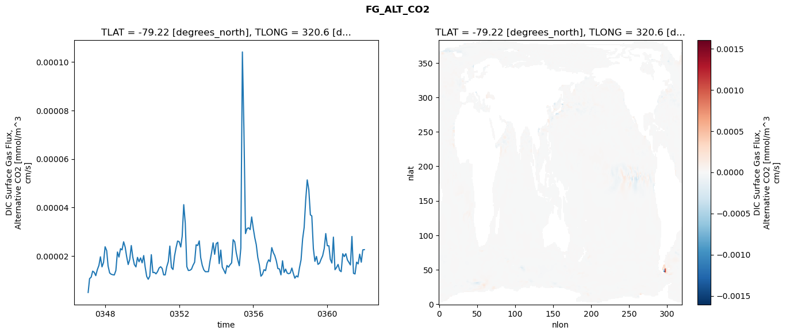

glb-dor_North_Atlantic_basin_030_1999-01-01_00120#
Simulation details#
Case: smyle.cdr-atlas-v0.glb-dor_North_Atlantic_basin_030_1999-01-01_00120.001
Basin: North_Atlantic_basin
Polygon: 30.0
Start date: 1999-01
Show code cell source Hide code cell source
import xarray as xr
import matplotlib.pyplot as plt
Show code cell source Hide code cell source
zarr_store = "/path/to/zarr/store"
# Parameters
zarr_store = "/global/cfs/projectdirs/m4746/Projects/Ocean-CDR-Atlas-v0/data/validation/smyle.cdr-atlas-v0.glb-dor_North_Atlantic_basin_030_1999-01-01_00120.001.validation.zarr"
Show code cell source Hide code cell source
%%time
ds_o = xr.open_zarr(zarr_store).compute()
ds_o
CPU times: user 680 ms, sys: 477 ms, total: 1.16 s
Wall time: 1.55 s
<xarray.Dataset> Size: 2MB
Dimensions: (nlat: 384, nlon: 320, time: 180)
Coordinates:
TLAT float64 8B -79.22
TLONG float64 8B 320.6
ULAT float64 8B -78.95
ULONG float64 8B 321.1
* time (time) object 1kB 0347-02-01 00:00:00 ... 0362-01-01 0...
z_t float32 4B 500.0
Dimensions without coordinates: nlat, nlon
Data variables:
ALK_ALT_CO2_diff (nlat, nlon) float32 492kB nan nan nan ... nan nan nan
ALK_ALT_CO2_rmse (time) float64 1kB 0.05479 0.1451 ... 0.08938 0.07418
DIC_ALT_CO2_diff (nlat, nlon) float32 492kB nan nan nan ... nan nan nan
DIC_ALT_CO2_rmse (time) float64 1kB 0.05705 0.1414 ... 0.145 0.1248
ECOSYS_IFRAC_diff (nlat, nlon) float32 492kB nan nan nan ... nan nan nan
ECOSYS_IFRAC_rmse (time) float64 1kB 0.0001491 0.0003028 ... 0.0004754
FG_ALT_CO2_diff (nlat, nlon) float32 492kB nan nan nan ... nan nan nan
FG_ALT_CO2_rmse (time) float64 1kB 4.987e-06 1.069e-05 ... 2.263e-05xarray.Dataset
- nlat: 384
- nlon: 320
- time: 180
- TLAT()float64-79.22
- long_name :
- array of t-grid latitudes
- units :
- degrees_north
array(-79.22052261)
- TLONG()float64320.6
- long_name :
- array of t-grid longitudes
- units :
- degrees_east
array(320.56250892)
- ULAT()float64-78.95
- long_name :
- array of u-grid latitudes
- units :
- degrees_north
array(-78.95289509)
- ULONG()float64321.1
- long_name :
- array of u-grid longitudes
- units :
- degrees_east
array(321.12500894)
- time(time)object0347-02-01 00:00:00 ... 0362-01-...
- bounds :
- time_bound
- long_name :
- time
array([cftime.DatetimeNoLeap(347, 2, 1, 0, 0, 0, 0, has_year_zero=True), cftime.DatetimeNoLeap(347, 3, 1, 0, 0, 0, 0, has_year_zero=True), cftime.DatetimeNoLeap(347, 4, 1, 0, 0, 0, 0, has_year_zero=True), cftime.DatetimeNoLeap(347, 5, 1, 0, 0, 0, 0, has_year_zero=True), cftime.DatetimeNoLeap(347, 6, 1, 0, 0, 0, 0, has_year_zero=True), cftime.DatetimeNoLeap(347, 7, 1, 0, 0, 0, 0, has_year_zero=True), cftime.DatetimeNoLeap(347, 8, 1, 0, 0, 0, 0, has_year_zero=True), cftime.DatetimeNoLeap(347, 9, 1, 0, 0, 0, 0, has_year_zero=True), cftime.DatetimeNoLeap(347, 10, 1, 0, 0, 0, 0, has_year_zero=True), cftime.DatetimeNoLeap(347, 11, 1, 0, 0, 0, 0, has_year_zero=True), cftime.DatetimeNoLeap(347, 12, 1, 0, 0, 0, 0, has_year_zero=True), cftime.DatetimeNoLeap(348, 1, 1, 0, 0, 0, 0, has_year_zero=True), cftime.DatetimeNoLeap(348, 2, 1, 0, 0, 0, 0, has_year_zero=True), cftime.DatetimeNoLeap(348, 3, 1, 0, 0, 0, 0, has_year_zero=True), cftime.DatetimeNoLeap(348, 4, 1, 0, 0, 0, 0, has_year_zero=True), cftime.DatetimeNoLeap(348, 5, 1, 0, 0, 0, 0, has_year_zero=True), cftime.DatetimeNoLeap(348, 6, 1, 0, 0, 0, 0, has_year_zero=True), cftime.DatetimeNoLeap(348, 7, 1, 0, 0, 0, 0, has_year_zero=True), cftime.DatetimeNoLeap(348, 8, 1, 0, 0, 0, 0, has_year_zero=True), cftime.DatetimeNoLeap(348, 9, 1, 0, 0, 0, 0, has_year_zero=True), cftime.DatetimeNoLeap(348, 10, 1, 0, 0, 0, 0, has_year_zero=True), cftime.DatetimeNoLeap(348, 11, 1, 0, 0, 0, 0, has_year_zero=True), cftime.DatetimeNoLeap(348, 12, 1, 0, 0, 0, 0, has_year_zero=True), cftime.DatetimeNoLeap(349, 1, 1, 0, 0, 0, 0, has_year_zero=True), cftime.DatetimeNoLeap(349, 2, 1, 0, 0, 0, 0, has_year_zero=True), cftime.DatetimeNoLeap(349, 3, 1, 0, 0, 0, 0, has_year_zero=True), cftime.DatetimeNoLeap(349, 4, 1, 0, 0, 0, 0, has_year_zero=True), cftime.DatetimeNoLeap(349, 5, 1, 0, 0, 0, 0, has_year_zero=True), cftime.DatetimeNoLeap(349, 6, 1, 0, 0, 0, 0, has_year_zero=True), cftime.DatetimeNoLeap(349, 7, 1, 0, 0, 0, 0, has_year_zero=True), cftime.DatetimeNoLeap(349, 8, 1, 0, 0, 0, 0, has_year_zero=True), cftime.DatetimeNoLeap(349, 9, 1, 0, 0, 0, 0, has_year_zero=True), cftime.DatetimeNoLeap(349, 10, 1, 0, 0, 0, 0, has_year_zero=True), cftime.DatetimeNoLeap(349, 11, 1, 0, 0, 0, 0, has_year_zero=True), cftime.DatetimeNoLeap(349, 12, 1, 0, 0, 0, 0, has_year_zero=True), cftime.DatetimeNoLeap(350, 1, 1, 0, 0, 0, 0, has_year_zero=True), cftime.DatetimeNoLeap(350, 2, 1, 0, 0, 0, 0, has_year_zero=True), cftime.DatetimeNoLeap(350, 3, 1, 0, 0, 0, 0, has_year_zero=True), cftime.DatetimeNoLeap(350, 4, 1, 0, 0, 0, 0, has_year_zero=True), cftime.DatetimeNoLeap(350, 5, 1, 0, 0, 0, 0, has_year_zero=True), cftime.DatetimeNoLeap(350, 6, 1, 0, 0, 0, 0, has_year_zero=True), cftime.DatetimeNoLeap(350, 7, 1, 0, 0, 0, 0, has_year_zero=True), cftime.DatetimeNoLeap(350, 8, 1, 0, 0, 0, 0, has_year_zero=True), cftime.DatetimeNoLeap(350, 9, 1, 0, 0, 0, 0, has_year_zero=True), cftime.DatetimeNoLeap(350, 10, 1, 0, 0, 0, 0, has_year_zero=True), cftime.DatetimeNoLeap(350, 11, 1, 0, 0, 0, 0, has_year_zero=True), cftime.DatetimeNoLeap(350, 12, 1, 0, 0, 0, 0, has_year_zero=True), cftime.DatetimeNoLeap(351, 1, 1, 0, 0, 0, 0, has_year_zero=True), cftime.DatetimeNoLeap(351, 2, 1, 0, 0, 0, 0, has_year_zero=True), cftime.DatetimeNoLeap(351, 3, 1, 0, 0, 0, 0, has_year_zero=True), cftime.DatetimeNoLeap(351, 4, 1, 0, 0, 0, 0, has_year_zero=True), cftime.DatetimeNoLeap(351, 5, 1, 0, 0, 0, 0, has_year_zero=True), cftime.DatetimeNoLeap(351, 6, 1, 0, 0, 0, 0, has_year_zero=True), cftime.DatetimeNoLeap(351, 7, 1, 0, 0, 0, 0, has_year_zero=True), cftime.DatetimeNoLeap(351, 8, 1, 0, 0, 0, 0, has_year_zero=True), cftime.DatetimeNoLeap(351, 9, 1, 0, 0, 0, 0, has_year_zero=True), cftime.DatetimeNoLeap(351, 10, 1, 0, 0, 0, 0, has_year_zero=True), cftime.DatetimeNoLeap(351, 11, 1, 0, 0, 0, 0, has_year_zero=True), cftime.DatetimeNoLeap(351, 12, 1, 0, 0, 0, 0, has_year_zero=True), cftime.DatetimeNoLeap(352, 1, 1, 0, 0, 0, 0, has_year_zero=True), cftime.DatetimeNoLeap(352, 2, 1, 0, 0, 0, 0, has_year_zero=True), cftime.DatetimeNoLeap(352, 3, 1, 0, 0, 0, 0, has_year_zero=True), cftime.DatetimeNoLeap(352, 4, 1, 0, 0, 0, 0, has_year_zero=True), cftime.DatetimeNoLeap(352, 5, 1, 0, 0, 0, 0, has_year_zero=True), cftime.DatetimeNoLeap(352, 6, 1, 0, 0, 0, 0, has_year_zero=True), cftime.DatetimeNoLeap(352, 7, 1, 0, 0, 0, 0, has_year_zero=True), cftime.DatetimeNoLeap(352, 8, 1, 0, 0, 0, 0, has_year_zero=True), cftime.DatetimeNoLeap(352, 9, 1, 0, 0, 0, 0, has_year_zero=True), cftime.DatetimeNoLeap(352, 10, 1, 0, 0, 0, 0, has_year_zero=True), cftime.DatetimeNoLeap(352, 11, 1, 0, 0, 0, 0, has_year_zero=True), cftime.DatetimeNoLeap(352, 12, 1, 0, 0, 0, 0, has_year_zero=True), cftime.DatetimeNoLeap(353, 1, 1, 0, 0, 0, 0, has_year_zero=True), cftime.DatetimeNoLeap(353, 2, 1, 0, 0, 0, 0, has_year_zero=True), cftime.DatetimeNoLeap(353, 3, 1, 0, 0, 0, 0, has_year_zero=True), cftime.DatetimeNoLeap(353, 4, 1, 0, 0, 0, 0, has_year_zero=True), cftime.DatetimeNoLeap(353, 5, 1, 0, 0, 0, 0, has_year_zero=True), cftime.DatetimeNoLeap(353, 6, 1, 0, 0, 0, 0, has_year_zero=True), cftime.DatetimeNoLeap(353, 7, 1, 0, 0, 0, 0, has_year_zero=True), cftime.DatetimeNoLeap(353, 8, 1, 0, 0, 0, 0, has_year_zero=True), cftime.DatetimeNoLeap(353, 9, 1, 0, 0, 0, 0, has_year_zero=True), cftime.DatetimeNoLeap(353, 10, 1, 0, 0, 0, 0, has_year_zero=True), cftime.DatetimeNoLeap(353, 11, 1, 0, 0, 0, 0, has_year_zero=True), cftime.DatetimeNoLeap(353, 12, 1, 0, 0, 0, 0, has_year_zero=True), cftime.DatetimeNoLeap(354, 1, 1, 0, 0, 0, 0, has_year_zero=True), cftime.DatetimeNoLeap(354, 2, 1, 0, 0, 0, 0, has_year_zero=True), cftime.DatetimeNoLeap(354, 3, 1, 0, 0, 0, 0, has_year_zero=True), cftime.DatetimeNoLeap(354, 4, 1, 0, 0, 0, 0, has_year_zero=True), cftime.DatetimeNoLeap(354, 5, 1, 0, 0, 0, 0, has_year_zero=True), cftime.DatetimeNoLeap(354, 6, 1, 0, 0, 0, 0, has_year_zero=True), cftime.DatetimeNoLeap(354, 7, 1, 0, 0, 0, 0, has_year_zero=True), cftime.DatetimeNoLeap(354, 8, 1, 0, 0, 0, 0, has_year_zero=True), cftime.DatetimeNoLeap(354, 9, 1, 0, 0, 0, 0, has_year_zero=True), cftime.DatetimeNoLeap(354, 10, 1, 0, 0, 0, 0, has_year_zero=True), cftime.DatetimeNoLeap(354, 11, 1, 0, 0, 0, 0, has_year_zero=True), cftime.DatetimeNoLeap(354, 12, 1, 0, 0, 0, 0, has_year_zero=True), cftime.DatetimeNoLeap(355, 1, 1, 0, 0, 0, 0, has_year_zero=True), cftime.DatetimeNoLeap(355, 2, 1, 0, 0, 0, 0, has_year_zero=True), cftime.DatetimeNoLeap(355, 3, 1, 0, 0, 0, 0, has_year_zero=True), cftime.DatetimeNoLeap(355, 4, 1, 0, 0, 0, 0, has_year_zero=True), cftime.DatetimeNoLeap(355, 5, 1, 0, 0, 0, 0, has_year_zero=True), cftime.DatetimeNoLeap(355, 6, 1, 0, 0, 0, 0, has_year_zero=True), cftime.DatetimeNoLeap(355, 7, 1, 0, 0, 0, 0, has_year_zero=True), cftime.DatetimeNoLeap(355, 8, 1, 0, 0, 0, 0, has_year_zero=True), cftime.DatetimeNoLeap(355, 9, 1, 0, 0, 0, 0, has_year_zero=True), cftime.DatetimeNoLeap(355, 10, 1, 0, 0, 0, 0, has_year_zero=True), cftime.DatetimeNoLeap(355, 11, 1, 0, 0, 0, 0, has_year_zero=True), cftime.DatetimeNoLeap(355, 12, 1, 0, 0, 0, 0, has_year_zero=True), cftime.DatetimeNoLeap(356, 1, 1, 0, 0, 0, 0, has_year_zero=True), cftime.DatetimeNoLeap(356, 2, 1, 0, 0, 0, 0, has_year_zero=True), cftime.DatetimeNoLeap(356, 3, 1, 0, 0, 0, 0, has_year_zero=True), cftime.DatetimeNoLeap(356, 4, 1, 0, 0, 0, 0, has_year_zero=True), cftime.DatetimeNoLeap(356, 5, 1, 0, 0, 0, 0, has_year_zero=True), cftime.DatetimeNoLeap(356, 6, 1, 0, 0, 0, 0, has_year_zero=True), cftime.DatetimeNoLeap(356, 7, 1, 0, 0, 0, 0, has_year_zero=True), cftime.DatetimeNoLeap(356, 8, 1, 0, 0, 0, 0, has_year_zero=True), cftime.DatetimeNoLeap(356, 9, 1, 0, 0, 0, 0, has_year_zero=True), cftime.DatetimeNoLeap(356, 10, 1, 0, 0, 0, 0, has_year_zero=True), cftime.DatetimeNoLeap(356, 11, 1, 0, 0, 0, 0, has_year_zero=True), cftime.DatetimeNoLeap(356, 12, 1, 0, 0, 0, 0, has_year_zero=True), cftime.DatetimeNoLeap(357, 1, 1, 0, 0, 0, 0, has_year_zero=True), cftime.DatetimeNoLeap(357, 2, 1, 0, 0, 0, 0, has_year_zero=True), cftime.DatetimeNoLeap(357, 3, 1, 0, 0, 0, 0, has_year_zero=True), cftime.DatetimeNoLeap(357, 4, 1, 0, 0, 0, 0, has_year_zero=True), cftime.DatetimeNoLeap(357, 5, 1, 0, 0, 0, 0, has_year_zero=True), cftime.DatetimeNoLeap(357, 6, 1, 0, 0, 0, 0, has_year_zero=True), cftime.DatetimeNoLeap(357, 7, 1, 0, 0, 0, 0, has_year_zero=True), cftime.DatetimeNoLeap(357, 8, 1, 0, 0, 0, 0, has_year_zero=True), cftime.DatetimeNoLeap(357, 9, 1, 0, 0, 0, 0, has_year_zero=True), cftime.DatetimeNoLeap(357, 10, 1, 0, 0, 0, 0, has_year_zero=True), cftime.DatetimeNoLeap(357, 11, 1, 0, 0, 0, 0, has_year_zero=True), cftime.DatetimeNoLeap(357, 12, 1, 0, 0, 0, 0, has_year_zero=True), cftime.DatetimeNoLeap(358, 1, 1, 0, 0, 0, 0, has_year_zero=True), cftime.DatetimeNoLeap(358, 2, 1, 0, 0, 0, 0, has_year_zero=True), cftime.DatetimeNoLeap(358, 3, 1, 0, 0, 0, 0, has_year_zero=True), cftime.DatetimeNoLeap(358, 4, 1, 0, 0, 0, 0, has_year_zero=True), cftime.DatetimeNoLeap(358, 5, 1, 0, 0, 0, 0, has_year_zero=True), cftime.DatetimeNoLeap(358, 6, 1, 0, 0, 0, 0, has_year_zero=True), cftime.DatetimeNoLeap(358, 7, 1, 0, 0, 0, 0, has_year_zero=True), cftime.DatetimeNoLeap(358, 8, 1, 0, 0, 0, 0, has_year_zero=True), cftime.DatetimeNoLeap(358, 9, 1, 0, 0, 0, 0, has_year_zero=True), cftime.DatetimeNoLeap(358, 10, 1, 0, 0, 0, 0, has_year_zero=True), cftime.DatetimeNoLeap(358, 11, 1, 0, 0, 0, 0, has_year_zero=True), cftime.DatetimeNoLeap(358, 12, 1, 0, 0, 0, 0, has_year_zero=True), cftime.DatetimeNoLeap(359, 1, 1, 0, 0, 0, 0, has_year_zero=True), cftime.DatetimeNoLeap(359, 2, 1, 0, 0, 0, 0, has_year_zero=True), cftime.DatetimeNoLeap(359, 3, 1, 0, 0, 0, 0, has_year_zero=True), cftime.DatetimeNoLeap(359, 4, 1, 0, 0, 0, 0, has_year_zero=True), cftime.DatetimeNoLeap(359, 5, 1, 0, 0, 0, 0, has_year_zero=True), cftime.DatetimeNoLeap(359, 6, 1, 0, 0, 0, 0, has_year_zero=True), cftime.DatetimeNoLeap(359, 7, 1, 0, 0, 0, 0, has_year_zero=True), cftime.DatetimeNoLeap(359, 8, 1, 0, 0, 0, 0, has_year_zero=True), cftime.DatetimeNoLeap(359, 9, 1, 0, 0, 0, 0, has_year_zero=True), cftime.DatetimeNoLeap(359, 10, 1, 0, 0, 0, 0, has_year_zero=True), cftime.DatetimeNoLeap(359, 11, 1, 0, 0, 0, 0, has_year_zero=True), cftime.DatetimeNoLeap(359, 12, 1, 0, 0, 0, 0, has_year_zero=True), cftime.DatetimeNoLeap(360, 1, 1, 0, 0, 0, 0, has_year_zero=True), cftime.DatetimeNoLeap(360, 2, 1, 0, 0, 0, 0, has_year_zero=True), cftime.DatetimeNoLeap(360, 3, 1, 0, 0, 0, 0, has_year_zero=True), cftime.DatetimeNoLeap(360, 4, 1, 0, 0, 0, 0, has_year_zero=True), cftime.DatetimeNoLeap(360, 5, 1, 0, 0, 0, 0, has_year_zero=True), cftime.DatetimeNoLeap(360, 6, 1, 0, 0, 0, 0, has_year_zero=True), cftime.DatetimeNoLeap(360, 7, 1, 0, 0, 0, 0, has_year_zero=True), cftime.DatetimeNoLeap(360, 8, 1, 0, 0, 0, 0, has_year_zero=True), cftime.DatetimeNoLeap(360, 9, 1, 0, 0, 0, 0, has_year_zero=True), cftime.DatetimeNoLeap(360, 10, 1, 0, 0, 0, 0, has_year_zero=True), cftime.DatetimeNoLeap(360, 11, 1, 0, 0, 0, 0, has_year_zero=True), cftime.DatetimeNoLeap(360, 12, 1, 0, 0, 0, 0, has_year_zero=True), cftime.DatetimeNoLeap(361, 1, 1, 0, 0, 0, 0, has_year_zero=True), cftime.DatetimeNoLeap(361, 2, 1, 0, 0, 0, 0, has_year_zero=True), cftime.DatetimeNoLeap(361, 3, 1, 0, 0, 0, 0, has_year_zero=True), cftime.DatetimeNoLeap(361, 4, 1, 0, 0, 0, 0, has_year_zero=True), cftime.DatetimeNoLeap(361, 5, 1, 0, 0, 0, 0, has_year_zero=True), cftime.DatetimeNoLeap(361, 6, 1, 0, 0, 0, 0, has_year_zero=True), cftime.DatetimeNoLeap(361, 7, 1, 0, 0, 0, 0, has_year_zero=True), cftime.DatetimeNoLeap(361, 8, 1, 0, 0, 0, 0, has_year_zero=True), cftime.DatetimeNoLeap(361, 9, 1, 0, 0, 0, 0, has_year_zero=True), cftime.DatetimeNoLeap(361, 10, 1, 0, 0, 0, 0, has_year_zero=True), cftime.DatetimeNoLeap(361, 11, 1, 0, 0, 0, 0, has_year_zero=True), cftime.DatetimeNoLeap(361, 12, 1, 0, 0, 0, 0, has_year_zero=True), cftime.DatetimeNoLeap(362, 1, 1, 0, 0, 0, 0, has_year_zero=True)], dtype=object) - z_t()float32500.0
- long_name :
- depth from surface to midpoint of layer
- positive :
- down
- units :
- centimeters
- valid_max :
- 537500.0
- valid_min :
- 500.0
array(500., dtype=float32)
- ALK_ALT_CO2_diff(nlat, nlon)float32nan nan nan nan ... nan nan nan nan
- cell_methods :
- time: mean
- grid_loc :
- 3111
- long_name :
- Alkalinity, Alternative CO2
- units :
- meq/m^3
array([[ nan, nan, nan, ..., nan, nan, nan], [ nan, nan, nan, ..., nan, nan, nan], [0.00756836, 0.00854492, 0.00805664, ..., nan, nan, nan], ..., [ nan, nan, nan, ..., nan, nan, nan], [ nan, nan, nan, ..., nan, nan, nan], [ nan, nan, nan, ..., nan, nan, nan]], dtype=float32) - ALK_ALT_CO2_rmse(time)float640.05479 0.1451 ... 0.08938 0.07418
- cell_methods :
- time: mean
- grid_loc :
- 3111
- long_name :
- Alkalinity, Alternative CO2
- units :
- meq/m^3
array([0.05478925, 0.14509022, 0.0813665 , 0.07205169, 0.09817166, 0.09433324, 0.17146601, 0.11088286, 0.08941312, 0.06266625, 0.05656472, 0.06248374, 0.0859496 , 0.18477592, 0.16087457, 0.11494903, 0.09956843, 0.10376323, 0.11748369, 0.08365159, 0.08509292, 0.06807793, 0.07626869, 0.09607142, 0.12486495, 0.15466136, 0.12580772, 0.10970612, 0.11421935, 0.16124687, 0.22001167, 0.11084946, 0.08040691, 0.06904339, 0.05679748, 0.05856808, 0.17607662, 0.25845697, 0.12101027, 0.10521757, 0.11801956, 0.11492714, 0.11153287, 0.08370035, 0.0595511 , 0.05135246, 0.06028778, 0.05983513, 0.1098384 , 0.18835191, 0.09920615, 0.097059 , 0.10924342, 0.09562872, 0.13991482, 0.09017461, 0.09532919, 0.06639652, 0.06468066, 0.06069135, 0.142881 , 0.14053497, 0.09615976, 0.11904422, 0.14703084, 0.15003053, 0.11905114, 0.08313727, 0.10685822, 0.08038923, 0.06027626, 0.06459492, 0.08987545, 0.13556423, 0.10895111, 0.12498319, 0.10242544, 0.11555663, 0.09391888, 0.07675785, 0.06062806, 0.0674637 , 0.06405306, 0.07608853, 0.12811192, 0.1707291 , 0.09755872, 0.09602511, 0.15229044, 0.13756482, 0.1621373 , 0.11432378, 0.08110744, 0.06755749, 0.07067458, 0.07411427, 0.08720616, 0.17843631, 0.1131172 , 0.10661547, 0.14129784, 0.11789243, 0.15983407, 0.16617754, 0.14445141, 0.14402374, 0.11687998, 0.08550645, 0.09465501, 0.13749134, 0.08881973, 0.10302167, 0.11142265, 0.10651556, 0.10570058, 0.10415932, 0.10735013, 0.12944042, 0.14585843, 0.14971434, 0.14738687, 0.15396566, 0.13297082, 0.12658995, 0.14639503, 0.14216572, 0.16125231, 0.1912402 , 0.12948216, 0.10523067, 0.10573617, 0.08875332, 0.23569627, 0.26618545, 0.12581455, 0.13098591, 0.10682037, 0.1448973 , 0.13486688, 0.12384912, 0.12176538, 0.1200502 , 0.11933873, 0.10975069, 0.11885047, 0.1801857 , 0.1121032 , 0.09607762, 0.14292769, 0.14036077, 0.1207937 , 0.07216383, 0.07891434, 0.07683192, 0.0784604 , 0.0750878 , 0.11730825, 0.16750394, 0.10196367, 0.09773115, 0.12319879, 0.16141405, 0.16725854, 0.09232445, 0.06682775, 0.07676655, 0.08417695, 0.08624058, 0.12293275, 0.18040544, 0.09112876, 0.09999918, 0.20319906, 0.22006068, 0.16147047, 0.12604489, 0.12976164, 0.09352402, 0.08938105, 0.07417927]) - DIC_ALT_CO2_diff(nlat, nlon)float32nan nan nan nan ... nan nan nan nan
- cell_methods :
- time: mean
- grid_loc :
- 3111
- long_name :
- Dissolved Inorganic Carbon, Alternative CO2
- units :
- mmol/m^3
array([[ nan, nan, nan, ..., nan, nan, nan], [ nan, nan, nan, ..., nan, nan, nan], [0.02294922, 0.02636719, 0.02978516, ..., nan, nan, nan], ..., [ nan, nan, nan, ..., nan, nan, nan], [ nan, nan, nan, ..., nan, nan, nan], [ nan, nan, nan, ..., nan, nan, nan]], dtype=float32) - DIC_ALT_CO2_rmse(time)float640.05705 0.1414 ... 0.145 0.1248
- cell_methods :
- time: mean
- grid_loc :
- 3111
- long_name :
- Dissolved Inorganic Carbon, Alternative CO2
- units :
- mmol/m^3
array([0.05704541, 0.14137549, 0.09892723, 0.09321407, 0.11428562, 0.1227985 , 0.18974601, 0.15241865, 0.13967664, 0.11697635, 0.1200519 , 0.14638087, 0.16424304, 0.20109363, 0.17957514, 0.14034118, 0.13741143, 0.15180614, 0.16893103, 0.16850892, 0.17130588, 0.16211505, 0.16278486, 0.17333432, 0.18202544, 0.19409778, 0.1666035 , 0.1428158 , 0.14271004, 0.18312019, 0.23017704, 0.15671004, 0.14710722, 0.12531272, 0.11747535, 0.11622381, 0.19194907, 0.25178363, 0.13773765, 0.12002176, 0.1330975 , 0.14000112, 0.1493873 , 0.13315775, 0.12227023, 0.10568563, 0.10388153, 0.10143884, 0.13731103, 0.19495111, 0.12343068, 0.12628494, 0.14025072, 0.13804792, 0.16207674, 0.14509655, 0.15891638, 0.1255993 , 0.12736472, 0.11658391, 0.16323588, 0.16696499, 0.15336447, 0.16476384, 0.17303321, 0.17372956, 0.158125 , 0.12883844, 0.15179446, 0.12870463, 0.11841282, 0.1158274 , 0.1266451 , 0.15154268, 0.13055581, 0.1396141 , 0.12104047, 0.13837081, 0.12710066, 0.13537821, 0.12871096, 0.13646559, 0.13742773, 0.16772929, 0.19112092, 0.20141775, 0.14405035, 0.13565209, 0.17861929, 0.16488796, 0.18246677, 0.15570564, 0.14126299, 0.12795731, 0.13957908, 0.13165238, 0.14594161, 0.21025231, 0.15309614, 0.15439904, 0.18656016, 0.1787939 , 0.18530385, 0.19712152, 0.21071628, 0.23347447, 0.22513336, 0.1757837 , 0.19112889, 0.19313028, 0.14420075, 0.13780039, 0.14337443, 0.14198987, 0.13197138, 0.13777611, 0.17716865, 0.18689407, 0.19713167, 0.20439792, 0.19796702, 0.20000399, 0.16567908, 0.15233661, 0.15626467, 0.16541383, 0.18478257, 0.20082216, 0.1446088 , 0.12497433, 0.11908955, 0.1077597 , 0.22472464, 0.24987511, 0.13058266, 0.13439314, 0.1268422 , 0.17704502, 0.18583122, 0.23217975, 0.26610313, 0.31397691, 0.30692768, 0.25116586, 0.26392804, 0.38253658, 0.24698908, 0.16340146, 0.17515888, 0.17129025, 0.16259536, 0.13944666, 0.16332294, 0.17943852, 0.17956121, 0.15111252, 0.18840481, 0.20904428, 0.14810576, 0.12990158, 0.15345588, 0.19043096, 0.17947038, 0.12685717, 0.11719838, 0.13435592, 0.13020981, 0.13651895, 0.15658223, 0.20476358, 0.13376524, 0.12569121, 0.20464652, 0.22760924, 0.18502024, 0.16157132, 0.16253333, 0.1464128 , 0.14495598, 0.12477917]) - ECOSYS_IFRAC_diff(nlat, nlon)float32nan nan nan nan ... nan nan nan nan
- cell_methods :
- time: mean
- grid_loc :
- 2110
- long_name :
- Ice Fraction for ecosys fluxes
- units :
- fraction
array([[ nan, nan, nan, ..., nan, nan, nan], [ nan, nan, nan, ..., nan, nan, nan], [-0.00019294, -0.00039065, -0.00017697, ..., nan, nan, nan], ..., [ nan, nan, nan, ..., nan, nan, nan], [ nan, nan, nan, ..., nan, nan, nan], [ nan, nan, nan, ..., nan, nan, nan]], dtype=float32) - ECOSYS_IFRAC_rmse(time)float640.0001491 0.0003028 ... 0.0004754
- cell_methods :
- time: mean
- grid_loc :
- 2110
- long_name :
- Ice Fraction for ecosys fluxes
- units :
- fraction
array([0.00014906, 0.00030279, 0.00042941, 0.00039711, 0.00041917, 0.00051029, 0.00064487, 0.00050059, 0.00046218, 0.0004537 , 0.00037434, 0.00121469, 0.00093376, 0.00039201, 0.0004107 , 0.00045613, 0.00035671, 0.00032831, 0.00070943, 0.00102766, 0.00051136, 0.00047874, 0.00044165, 0.00077248, 0.00147707, 0.00097345, 0.00075643, 0.0005704 , 0.00038597, 0.00033473, 0.00068683, 0.00077612, 0.00046352, 0.00033909, 0.00034811, 0.00049224, 0.00084011, 0.00042079, 0.00050599, 0.00036579, 0.00034666, 0.00050011, 0.0008349 , 0.00062289, 0.00046218, 0.00046054, 0.00038108, 0.00067874, 0.00074559, 0.00101461, 0.00084628, 0.00050028, 0.00034892, 0.00046387, 0.00079235, 0.00054438, 0.00040566, 0.00043779, 0.00044497, 0.00123211, 0.00076738, 0.00074476, 0.00060249, 0.00037828, 0.00027567, 0.00052048, 0.00077347, 0.00073727, 0.00062303, 0.00068535, 0.00043298, 0.00125372, 0.00222981, 0.00036993, 0.00032654, 0.00043061, 0.00093081, 0.00060808, 0.00063164, 0.00053769, 0.00046022, 0.00052898, 0.00050301, 0.00074236, 0.0009091 , 0.00076572, 0.00043101, 0.00042124, 0.00035494, 0.0004108 , 0.00061966, 0.00063338, 0.00058422, 0.00032533, 0.00042231, 0.00050743, 0.00088655, 0.00050471, 0.00043539, 0.00046928, 0.00045961, 0.0004332 , 0.0006392 , 0.00094679, 0.00095727, 0.00038874, 0.00068609, 0.0009789 , 0.00114125, 0.00137122, 0.0009192 , 0.00038548, 0.00050905, 0.0005552 , 0.00093227, 0.00051699, 0.00056408, 0.00049658, 0.0005493 , 0.00042941, 0.00061318, 0.00058012, 0.00048215, 0.00039268, 0.00033028, 0.00041895, 0.00075219, 0.00053063, 0.00055291, 0.00055541, 0.00036118, 0.00053729, 0.00058728, 0.00033898, 0.00031887, 0.00032046, 0.000357 , 0.00059962, 0.00080558, 0.00039508, 0.00034788, 0.00039694, 0.00034148, 0.00039396, 0.00068325, 0.00056136, 0.00047698, 0.00047299, 0.0005697 , 0.00052842, 0.00111956, 0.00049027, 0.00041536, 0.00037172, 0.00040768, 0.00032256, 0.00064796, 0.0004942 , 0.00043068, 0.00043017, 0.00042282, 0.0006025 , 0.00108715, 0.00032305, 0.00040319, 0.00040457, 0.00046071, 0.00127243, 0.00082511, 0.00100106, 0.00065814, 0.00038657, 0.00030369, 0.00035203, 0.00080354, 0.00068913, 0.00050649, 0.00055498, 0.00054361, 0.00047537]) - FG_ALT_CO2_diff(nlat, nlon)float32nan nan nan nan ... nan nan nan nan
- cell_methods :
- time: mean
- grid_loc :
- 2110
- long_name :
- DIC Surface Gas Flux, Alternative CO2
- units :
- mmol/m^3 cm/s
array([[ nan, nan, nan, ..., nan, nan, nan], [ nan, nan, nan, ..., nan, nan, nan], [1.2187093e-07, 2.7071337e-07, 1.7113894e-07, ..., nan, nan, nan], ..., [ nan, nan, nan, ..., nan, nan, nan], [ nan, nan, nan, ..., nan, nan, nan], [ nan, nan, nan, ..., nan, nan, nan]], dtype=float32) - FG_ALT_CO2_rmse(time)float644.987e-06 1.069e-05 ... 2.263e-05
- cell_methods :
- time: mean
- grid_loc :
- 2110
- long_name :
- DIC Surface Gas Flux, Alternative CO2
- units :
- mmol/m^3 cm/s
array([4.98725798e-06, 1.06936150e-05, 1.12883476e-05, 1.37682289e-05, 1.32910840e-05, 1.19175544e-05, 1.43930497e-05, 1.61372791e-05, 1.96765313e-05, 1.55405214e-05, 1.73273957e-05, 2.38261356e-05, 2.22383136e-05, 1.58787596e-05, 1.30273290e-05, 1.24979094e-05, 1.23003812e-05, 1.22010171e-05, 1.40065363e-05, 2.16729453e-05, 1.95890287e-05, 2.30256593e-05, 2.25522525e-05, 2.58750541e-05, 2.36590795e-05, 1.98526058e-05, 1.65011678e-05, 1.85375762e-05, 2.43328040e-05, 1.95275818e-05, 1.64878907e-05, 1.55184028e-05, 1.94496645e-05, 1.76448363e-05, 1.92351586e-05, 1.72025091e-05, 2.01940429e-05, 1.55707188e-05, 1.15878887e-05, 1.04334088e-05, 1.17642218e-05, 2.05640655e-05, 1.31813884e-05, 1.32653552e-05, 1.26512221e-05, 1.35805912e-05, 1.50656564e-05, 1.55937012e-05, 1.48425708e-05, 1.22413603e-05, 1.22408764e-05, 1.55692870e-05, 1.77385564e-05, 2.41037519e-05, 1.52504513e-05, 1.44520885e-05, 1.99532789e-05, 2.34486808e-05, 2.61788293e-05, 2.59359597e-05, 2.37226405e-05, 2.81229010e-05, 4.11721602e-05, 3.35575567e-05, 1.56210398e-05, 1.40546907e-05, 1.41273134e-05, 1.46012884e-05, 1.61928163e-05, 1.74371720e-05, 2.46290961e-05, 2.43402001e-05, 2.62521865e-05, 1.93567353e-05, 1.61643530e-05, 1.43309756e-05, 1.35426686e-05, 1.35620743e-05, 1.35595937e-05, 1.79021015e-05, ... 1.04119456e-04, 7.24228166e-05, 2.92692906e-05, 3.13528723e-05, 3.16207171e-05, 3.09155312e-05, 3.61027867e-05, 3.14489088e-05, 2.74786567e-05, 2.47469683e-05, 1.93919142e-05, 1.63936538e-05, 1.16898381e-05, 1.24345662e-05, 1.43698671e-05, 1.39935250e-05, 1.70719967e-05, 1.84278762e-05, 1.76972556e-05, 2.34695033e-05, 2.13859637e-05, 2.02166481e-05, 1.79974138e-05, 1.48485541e-05, 1.46852675e-05, 1.22322432e-05, 1.80432801e-05, 1.32411448e-05, 1.46222460e-05, 1.29781867e-05, 1.27135191e-05, 1.30256592e-05, 1.50519384e-05, 1.28880744e-05, 1.08739103e-05, 1.18075890e-05, 1.13760103e-05, 1.51659526e-05, 1.84311745e-05, 2.70301449e-05, 3.17599206e-05, 4.31397906e-05, 5.13818619e-05, 4.73621025e-05, 3.69797732e-05, 3.65408627e-05, 2.30820512e-05, 1.78123178e-05, 1.98352931e-05, 1.65673697e-05, 1.70519025e-05, 1.87323223e-05, 2.01379010e-05, 2.30995160e-05, 2.92660581e-05, 2.42370707e-05, 2.42280317e-05, 1.86650231e-05, 1.71036335e-05, 2.77980865e-05, 1.43677654e-05, 1.52506409e-05, 1.65477774e-05, 1.40705688e-05, 1.35584999e-05, 2.09428820e-05, 1.97720776e-05, 2.09608735e-05, 1.83829394e-05, 1.74423329e-05, 1.63290368e-05, 2.80636009e-05, 1.28796464e-05, 1.26102015e-05, 1.74776754e-05, 1.67781128e-05, 2.07899751e-05, 1.74697032e-05, 2.25477562e-05, 2.26333317e-05])
- timePandasIndex
PandasIndex(CFTimeIndex([0347-02-01 00:00:00, 0347-03-01 00:00:00, 0347-04-01 00:00:00, 0347-05-01 00:00:00, 0347-06-01 00:00:00, 0347-07-01 00:00:00, 0347-08-01 00:00:00, 0347-09-01 00:00:00, 0347-10-01 00:00:00, 0347-11-01 00:00:00, ... 0361-04-01 00:00:00, 0361-05-01 00:00:00, 0361-06-01 00:00:00, 0361-07-01 00:00:00, 0361-08-01 00:00:00, 0361-09-01 00:00:00, 0361-10-01 00:00:00, 0361-11-01 00:00:00, 0361-12-01 00:00:00, 0362-01-01 00:00:00], dtype='object', length=180, calendar='noleap', freq='MS'))
Show code cell source Hide code cell source
variables = [v[:-5] for v in ds_o.variables if "_rmse" in v]
Show code cell source Hide code cell source
plt.rcParams.update({'figure.max_open_warning': 0})
for v in variables:
fig, axs = plt.subplots(1, 2, figsize=(15, 6))
ds_o[f"{v}_rmse"].plot(ax=axs[0])
ds_o[f"{v}_diff"].plot(ax=axs[1])
plt.suptitle(v, fontweight="bold")


 

